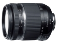

器材库 > APS画幅镜头 > 18-270/3.5-6.3 Di II VC PZD (B008TS)

详细规格
镜头类型
标准变焦镜头
发布日期
2016-09-06
厂家推荐价格
83,000.00 （日元）
焦距
18mm-270mm
最大光圈
f/3.5-6.3
最小光圈
f/22-40
视角（对角）
75°33 - 5°55
镜头结构
16片/13组
光圈叶片
7片
最近对焦距离
49cm
最大放大倍率
1:3.8
驱动马达
PZD（超声波自动对焦马达）
滤镜口径
62mm
镜头卡口
Canon EF, Nikon F
防抖
是
颜色
黑色
尺寸
佳能卡口：74.4×90.5mm尼康卡口：74.4×88mm
重量
450g
附件
花瓣型遮光罩，镜头盖
该产品暂无存档的网友点评
产品图 / 样片
18-270/3.5-6.3 Di II VC PZD (B008TS)